Die Decks
Hier stehen alle Karten aus allen drei Decks zum Nachschlagen – und zum Selberausdrucken.
The Top 32
01/32
KQ
Public domain
commons.wikimedia.org/wiki/File:Goethe_(S…
Johann Wolfgang von Goethe
- Kanonscore1.000
- Nennungen Uni-Leselisten42
- Anzahl Forschungstexte10.227
- Wikipedia Pageviews3.648.043
- Alter83
- Geburtsjahr1749
- Anzahl GND-Berufe8
02/32
KQ
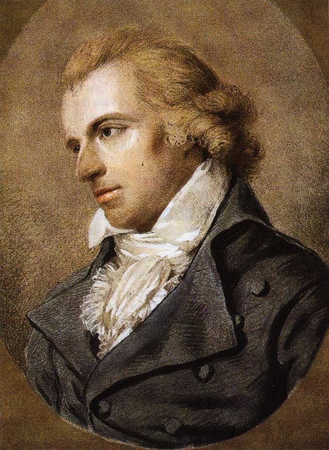
Public domain
commons.wikimedia.org/wiki/File:Friedrich…
Friedrich Schiller
- Kanonscore535
- Nennungen Uni-Leselisten42
- Anzahl Forschungstexte3.890
- Wikipedia Pageviews2.042.583
- Alter46
- Geburtsjahr1759
- Anzahl GND-Berufe8
03/32
KQ
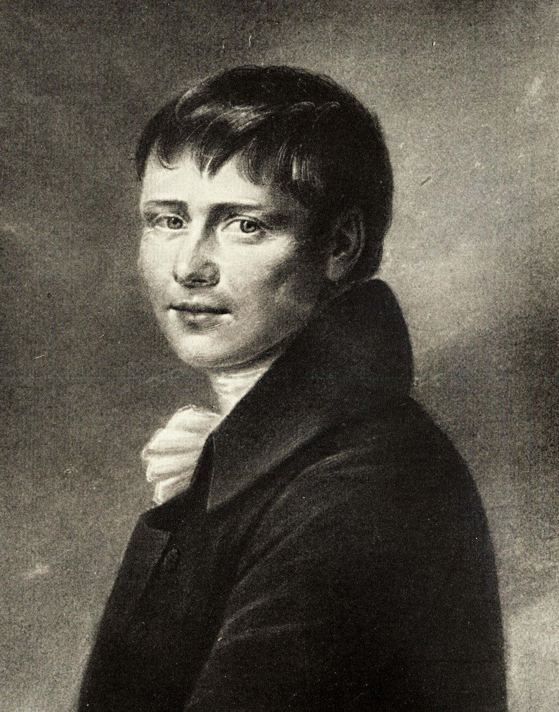
Public domain
commons.wikimedia.org/wiki/File:Heinrich_…
Heinrich von Kleist
- Kanonscore433
- Nennungen Uni-Leselisten42
- Anzahl Forschungstexte3.334
- Wikipedia Pageviews802.148
- Alter34
- Geburtsjahr1777
- Anzahl GND-Berufe3
04/32
KQ
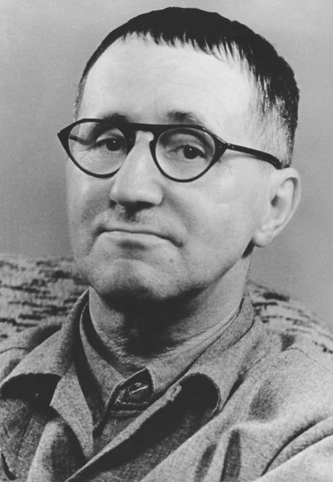
CC BY-SA 3.0 de
commons.wikimedia.org/wiki/File:Bundesarc…
Bertolt Brecht
- Kanonscore414
- Nennungen Uni-Leselisten42
- Anzahl Forschungstexte3.179
- Wikipedia Pageviews2.315.455
- Alter58
- Geburtsjahr1898
- Anzahl GND-Berufe10
05/32
KQ
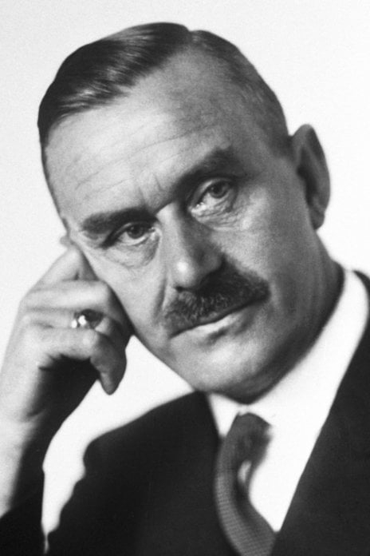
Public domain
commons.wikimedia.org/wiki/File:Thomas_Ma…
Thomas Mann
- Kanonscore322
- Nennungen Uni-Leselisten42
- Anzahl Forschungstexte4.798
- Wikipedia Pageviews2.329.343
- Alter80
- Geburtsjahr1875
- Anzahl GND-Berufe4
06/32
KQ
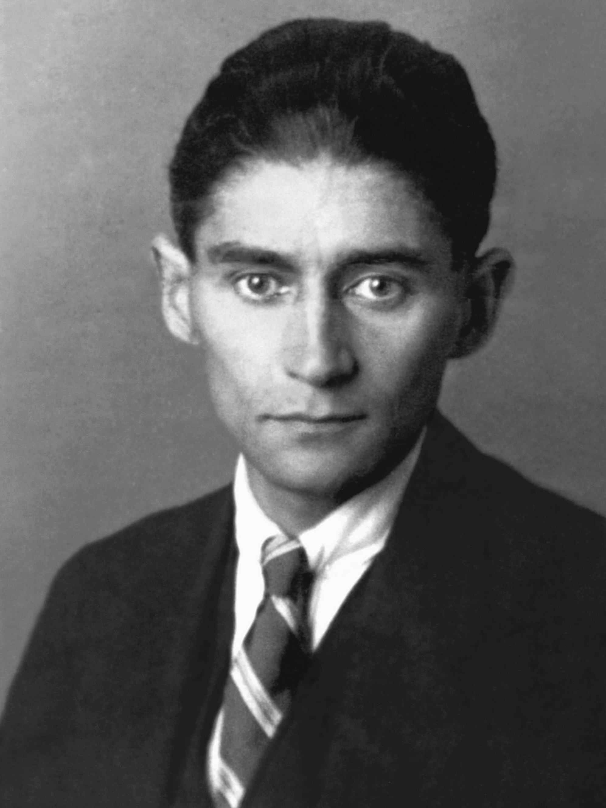
Public domain
commons.wikimedia.org/wiki/File:Franz_Kaf…
Franz Kafka
- Kanonscore313
- Nennungen Uni-Leselisten41
- Anzahl Forschungstexte4.864
- Wikipedia Pageviews3.932.249
- Alter41
- Geburtsjahr1883
- Anzahl GND-Berufe5
07/32
KQ
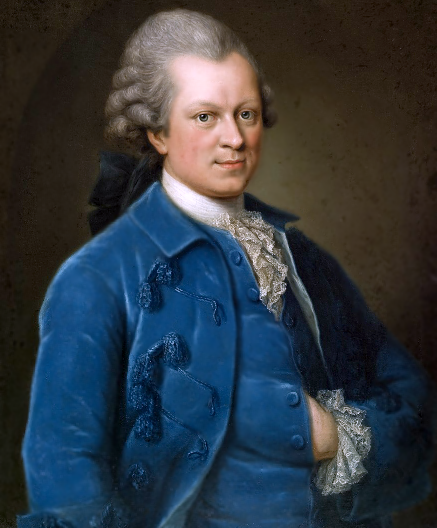
Public domain
commons.wikimedia.org/wiki/File:Gotthold_…
Gotthold Ephraim Lessing
- Kanonscore311
- Nennungen Uni-Leselisten42
- Anzahl Forschungstexte1.723
- Wikipedia Pageviews921.520
- Alter52
- Geburtsjahr1729
- Anzahl GND-Berufe5
08/32
KQ
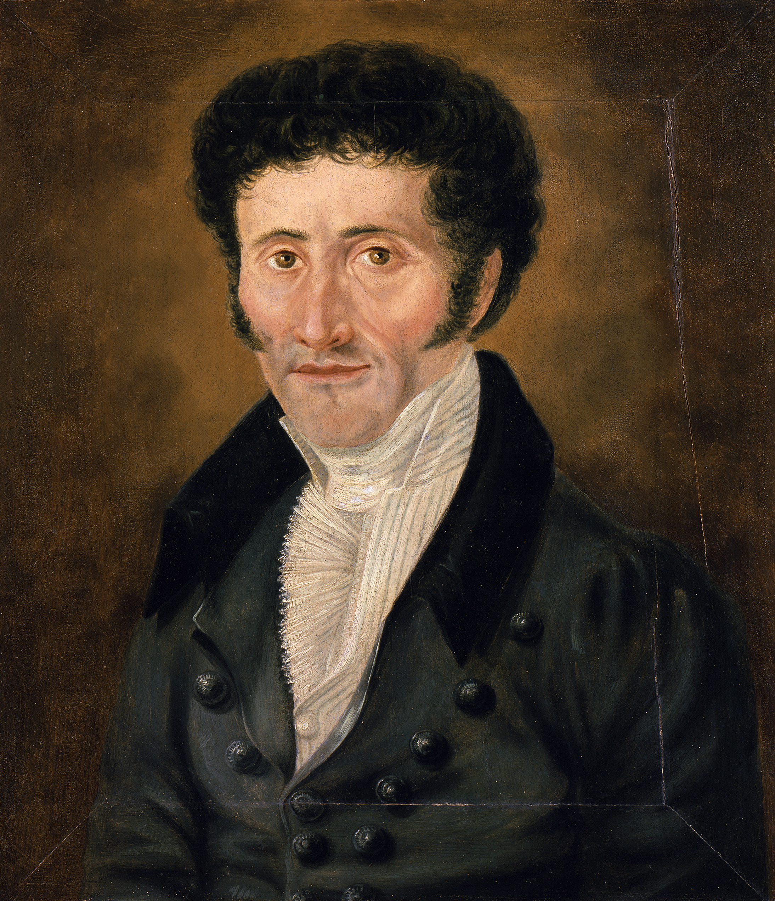
Public domain
commons.wikimedia.org/wiki/File:E._T._A._…
E. T. A. Hoffmann
- Kanonscore293
- Nennungen Uni-Leselisten42
- Anzahl Forschungstexte3.016
- Wikipedia Pageviews936.921
- Alter46
- Geburtsjahr1776
- Anzahl GND-Berufe7
09/32
KQ
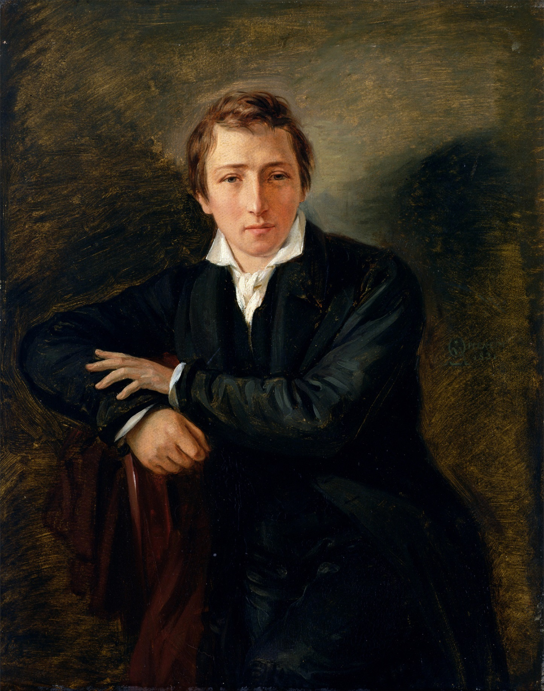
Public domain
commons.wikimedia.org/wiki/File:Heinrich_…
Heinrich Heine
- Kanonscore267
- Nennungen Uni-Leselisten37
- Anzahl Forschungstexte2.460
- Wikipedia Pageviews1.542.075
- Alter59
- Geburtsjahr1797
- Anzahl GND-Berufe9
10/32
KQ
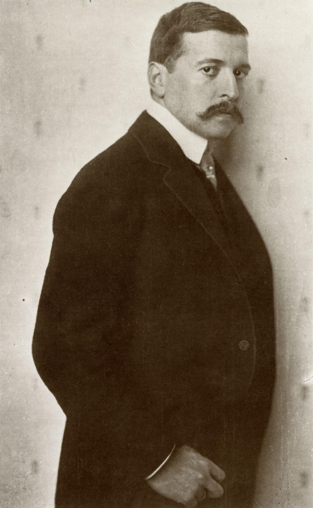
Public domain
commons.wikimedia.org/wiki/File:Nicola_Pe…
Hugo von Hofmannsthal
- Kanonscore222
- Nennungen Uni-Leselisten38
- Anzahl Forschungstexte1.441
- Wikipedia Pageviews529.308
- Alter55
- Geburtsjahr1874
- Anzahl GND-Berufe7
11/32
KQ
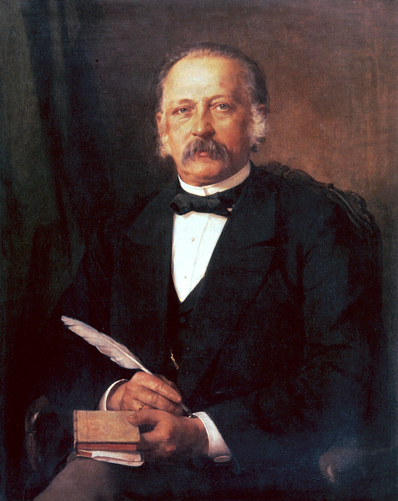
Public domain
commons.wikimedia.org/wiki/File:Theodor_F…
Theodor Fontane
- Kanonscore218
- Nennungen Uni-Leselisten42
- Anzahl Forschungstexte2.380
- Wikipedia Pageviews978.643
- Alter79
- Geburtsjahr1819
- Anzahl GND-Berufe12
12/32
KQ
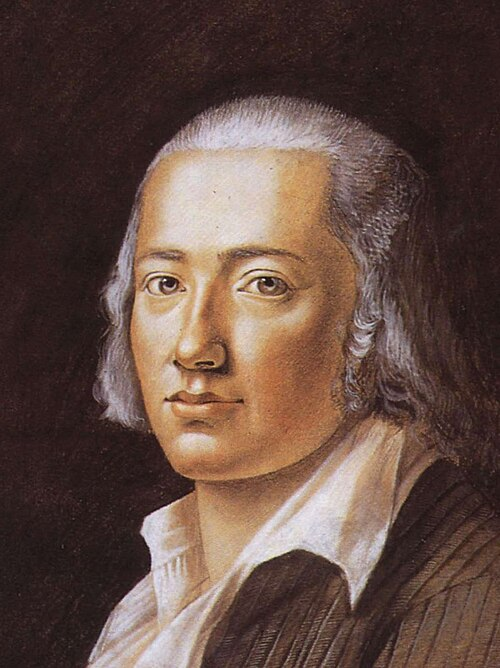
Public domain
commons.wikimedia.org/wiki/File:FK_Hiemer…
Friedrich Hölderlin
- Kanonscore204
- Nennungen Uni-Leselisten34
- Anzahl Forschungstexte2.137
- Wikipedia Pageviews586.914
- Alter73
- Geburtsjahr1770
- Anzahl GND-Berufe5
13/32
KQ
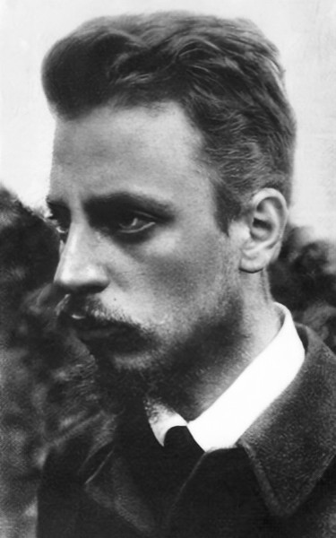
Public domain
commons.wikimedia.org/wiki/File:Rainer_Ma…
Rainer Maria Rilke
- Kanonscore187
- Nennungen Uni-Leselisten36
- Anzahl Forschungstexte2.322
- Wikipedia Pageviews1.300.434
- Alter51
- Geburtsjahr1875
- Anzahl GND-Berufe2
14/32
KQ
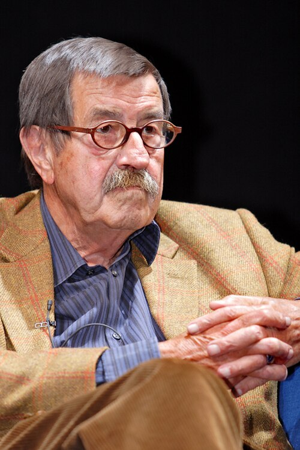
Günter Grass
- Kanonscore180
- Nennungen Uni-Leselisten36
- Anzahl Forschungstexte1.685
- Wikipedia Pageviews984.546
- Alter88
- Geburtsjahr1927
- Anzahl GND-Berufe7
15/32
KQ
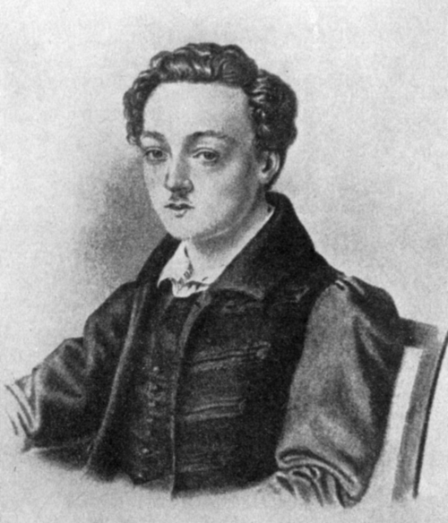
Public domain
commons.wikimedia.org/wiki/File:Georg_Büc…
Georg Büchner
- Kanonscore178
- Nennungen Uni-Leselisten41
- Anzahl Forschungstexte1.152
- Wikipedia Pageviews876.301
- Alter24
- Geburtsjahr1813
- Anzahl GND-Berufe4
16/32
KQ
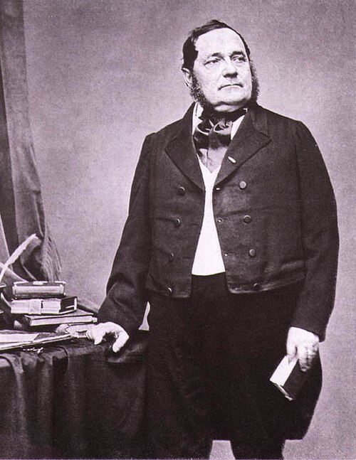
Public domain
commons.wikimedia.org/wiki/File:Adalbert_…
Adalbert Stifter
- Kanonscore171
- Nennungen Uni-Leselisten36
- Anzahl Forschungstexte1.280
- Wikipedia Pageviews312.952
- Alter63
- Geburtsjahr1805
- Anzahl GND-Berufe6
17/32
KQ
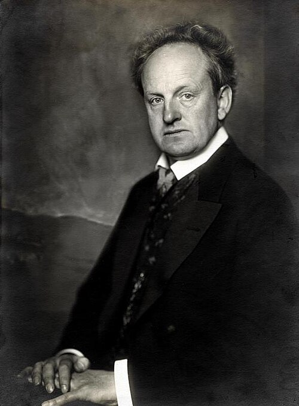
Public domain
commons.wikimedia.org/wiki/File:Scolik_-_…
Gerhart Hauptmann
- Kanonscore168
- Nennungen Uni-Leselisten42
- Anzahl Forschungstexte788
- Wikipedia Pageviews702.284
- Alter84
- Geburtsjahr1862
- Anzahl GND-Berufe4
18/32

KQ
CC BY-SA 3.0
commons.wikimedia.org/wiki/File:Peter-han…
Peter Handke
- Kanonscore160
- Nennungen Uni-Leselisten34
- Anzahl Forschungstexte1.226
- Wikipedia Pageviews614.780
- Alter84
- Geburtsjahr1942
- Anzahl GND-Berufe11
19/32
KQ
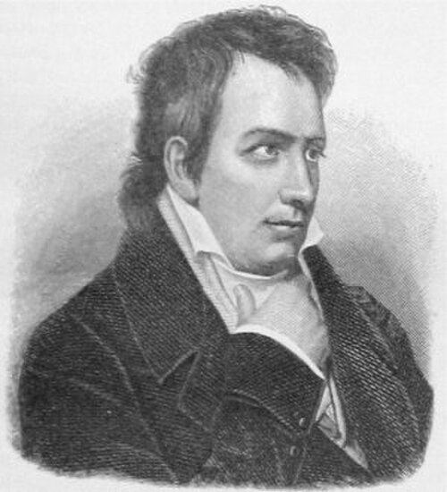
Public domain
commons.wikimedia.org/wiki/File:Ludwig_Ti…
Ludwig Tieck
- Kanonscore160
- Nennungen Uni-Leselisten34
- Anzahl Forschungstexte580
- Wikipedia Pageviews174.913
- Alter80
- Geburtsjahr1773
- Anzahl GND-Berufe11
20/32
KQ
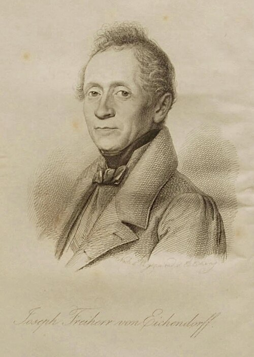
CC BY-SA 3.0
commons.wikimedia.org/wiki/File:Joseph_Fr…
Joseph von Eichendorff
- Kanonscore155
- Nennungen Uni-Leselisten40
- Anzahl Forschungstexte666
- Wikipedia Pageviews680.399
- Alter69
- Geburtsjahr1788
- Anzahl GND-Berufe7
21/32
KQ
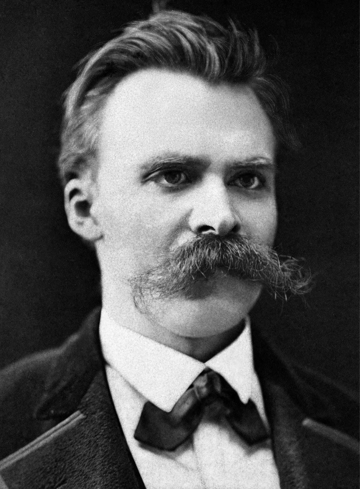
Public domain
commons.wikimedia.org/wiki/File:Nietzsche…
Friedrich Nietzsche
- Kanonscore149
- Nennungen Uni-Leselisten17
- Anzahl Forschungstexte3.296
- Wikipedia Pageviews2.218.018
- Alter56
- Geburtsjahr1844
- Anzahl GND-Berufe5
22/32
KQ
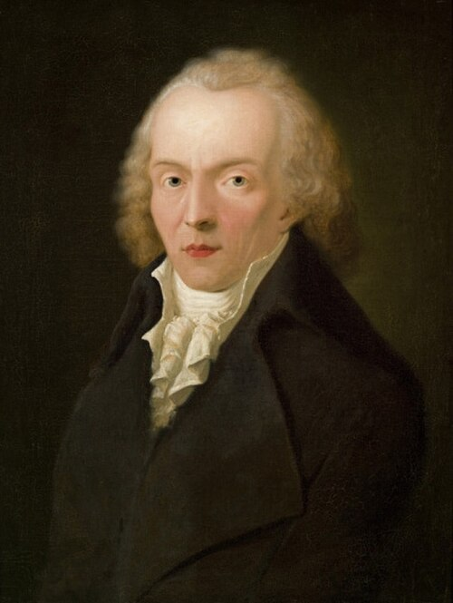
Public domain
commons.wikimedia.org/wiki/File:RichterJP…
Jean Paul
- Kanonscore143
- Nennungen Uni-Leselisten28
- Anzahl Forschungstexte1.154
- Wikipedia Pageviews349.029
- Alter62
- Geburtsjahr1763
- Anzahl GND-Berufe3
23/32

KQ
CC BY-SA 4.0
commons.wikimedia.org/wiki/File:Ingeborg_…
Ingeborg Bachmann
- Kanonscore142
- Nennungen Uni-Leselisten38
- Anzahl Forschungstexte1.557
- Wikipedia Pageviews1.068.397
- Alter47
- Geburtsjahr1926
- Anzahl GND-Berufe3
24/32
KQ
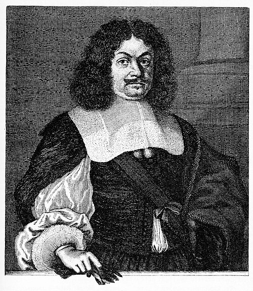
Public domain
commons.wikimedia.org/wiki/File:Andreas_G…
Andreas Gryphius
- Kanonscore141
- Nennungen Uni-Leselisten38
- Anzahl Forschungstexte288
- Wikipedia Pageviews201.276
- Alter48
- Geburtsjahr1616
- Anzahl GND-Berufe4
25/32
KQ
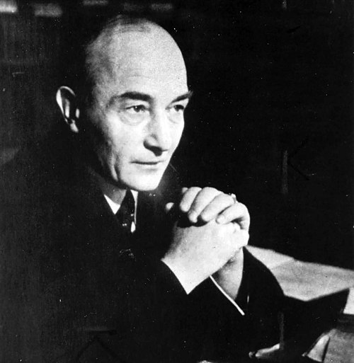
Public domain
commons.wikimedia.org/wiki/File:Musil.jpg
Robert Musil
- Kanonscore140
- Nennungen Uni-Leselisten39
- Anzahl Forschungstexte1.689
- Wikipedia Pageviews375.916
- Alter62
- Geburtsjahr1880
- Anzahl GND-Berufe6
26/32
KQ
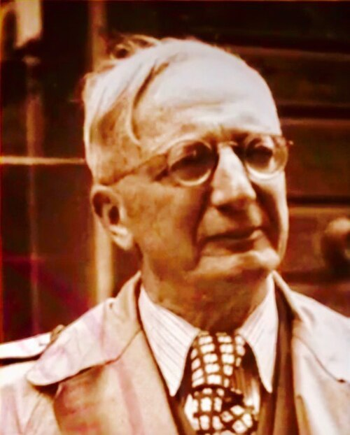
Public domain
commons.wikimedia.org/wiki/File:Doeblin_a…
Alfred Döblin
- Kanonscore140
- Nennungen Uni-Leselisten39
- Anzahl Forschungstexte1.038
- Wikipedia Pageviews258.153
- Alter79
- Geburtsjahr1878
- Anzahl GND-Berufe5
27/32
KQ
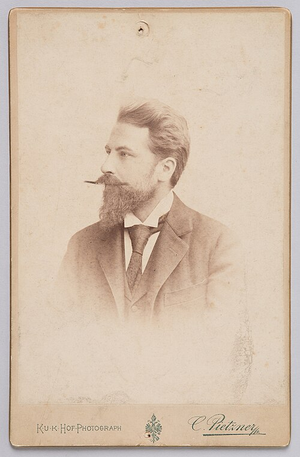
Public domain
commons.wikimedia.org/wiki/File:Arthur_Sc…
Arthur Schnitzler
- Kanonscore139
- Nennungen Uni-Leselisten42
- Anzahl Forschungstexte1.168
- Wikipedia Pageviews528.750
- Alter69
- Geburtsjahr1862
- Anzahl GND-Berufe5
28/32
KQ
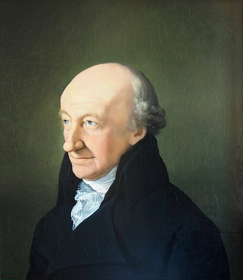
Public domain
commons.wikimedia.org/wiki/File:Weimar_An…
Christoph Martin Wieland
- Kanonscore136
- Nennungen Uni-Leselisten29
- Anzahl Forschungstexte808
- Wikipedia Pageviews300.134
- Alter80
- Geburtsjahr1733
- Anzahl GND-Berufe6
29/32
KQ
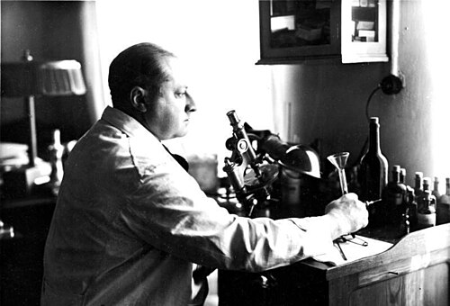
CC BY-SA 3.0 de
commons.wikimedia.org/wiki/File:Bundesarc…
Gottfried Benn
- Kanonscore127
- Nennungen Uni-Leselisten31
- Anzahl Forschungstexte884
- Wikipedia Pageviews439.415
- Alter70
- Geburtsjahr1886
- Anzahl GND-Berufe3
30/32
KQ
CC BY-SA 3.0 de
commons.wikimedia.org/wiki/File:Bundesarc…
Christa Wolf
- Kanonscore126
- Nennungen Uni-Leselisten37
- Anzahl Forschungstexte1.043
- Wikipedia Pageviews364.333
- Alter82
- Geburtsjahr1929
- Anzahl GND-Berufe4
31/32
KQ
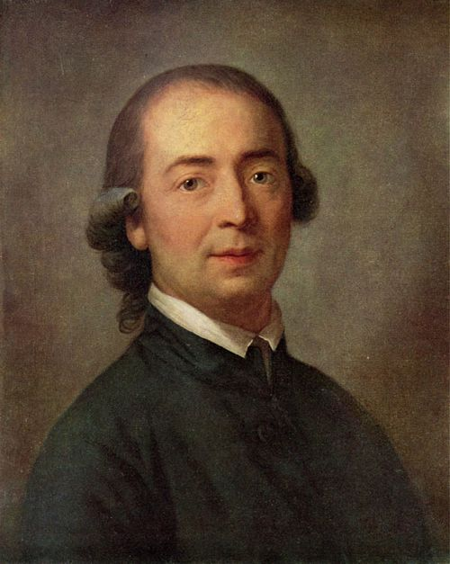
Public domain
commons.wikimedia.org/wiki/File:Johann_Go…
Johann Gottfried Herder
- Kanonscore125
- Nennungen Uni-Leselisten20
- Anzahl Forschungstexte1.406
- Wikipedia Pageviews436.647
- Alter59
- Geburtsjahr1744
- Anzahl GND-Berufe7
32/32
KQ
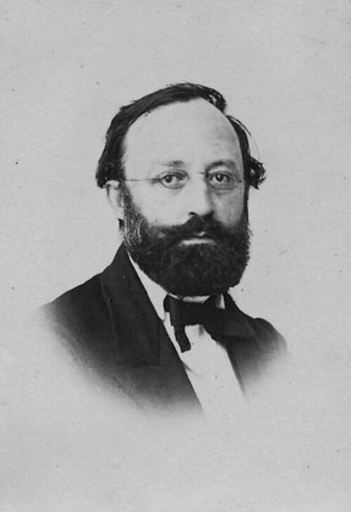
Public domain
commons.wikimedia.org/wiki/File:Gottfried…
Gottfried Keller
- Kanonscore119
- Nennungen Uni-Leselisten39
- Anzahl Forschungstexte755
- Wikipedia Pageviews385.894
- Alter71
- Geburtsjahr1819
- Anzahl GND-Berufe5
The 20th century
01/32
KQ

Günter Grass
- Kanonscore180
- Nennungen Uni-Leselisten36
- Anzahl Forschungstexte1.685
- Wikipedia Pageviews984.546
- Alter88
- Geburtsjahr1927
- Anzahl GND-Berufe7
02/32
KQ
CC BY-SA 3.0
commons.wikimedia.org/wiki/File:Peter-han…
Peter Handke
- Kanonscore160
- Nennungen Uni-Leselisten34
- Anzahl Forschungstexte1.226
- Wikipedia Pageviews614.780
- Alter84
- Geburtsjahr1942
- Anzahl GND-Berufe11
03/32
KQ
CC BY-SA 4.0
commons.wikimedia.org/wiki/File:Ingeborg_…
Ingeborg Bachmann
- Kanonscore142
- Nennungen Uni-Leselisten38
- Anzahl Forschungstexte1.557
- Wikipedia Pageviews1.068.397
- Alter47
- Geburtsjahr1926
- Anzahl GND-Berufe3
04/32

KQ
CC BY-SA 3.0 de
commons.wikimedia.org/wiki/File:Bundesarc…
Christa Wolf
- Kanonscore126
- Nennungen Uni-Leselisten37
- Anzahl Forschungstexte1.043
- Wikipedia Pageviews364.333
- Alter82
- Geburtsjahr1929
- Anzahl GND-Berufe4
05/32
KQ
CC BY-SA 3.0
commons.wikimedia.org/wiki/File:Elfriede_…
Elfriede Jelinek
- Kanonscore104
- Nennungen Uni-Leselisten35
- Anzahl Forschungstexte1.516
- Wikipedia Pageviews612.006
- Alter80
- Geburtsjahr1946
- Anzahl GND-Berufe5
06/32
KQ
CC BY-SA 4.0
commons.wikimedia.org/wiki/File:Thomas_Be…
Thomas Bernhard
- Kanonscore96
- Nennungen Uni-Leselisten37
- Anzahl Forschungstexte1.498
- Wikipedia Pageviews631.863
- Alter58
- Geburtsjahr1931
- Anzahl GND-Berufe3
07/32
KQ
CC BY-SA 3.0 de
commons.wikimedia.org/wiki/File:Bundesarc…
Heinrich Böll
- Kanonscore92
- Nennungen Uni-Leselisten30
- Anzahl Forschungstexte565
- Wikipedia Pageviews853.529
- Alter68
- Geburtsjahr1917
- Anzahl GND-Berufe3
08/32
KQ
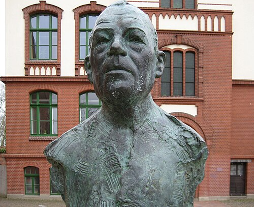
CC BY-SA 3.0
commons.wikimedia.org/wiki/File:GuestrowU…
Uwe Johnson
- Kanonscore86
- Nennungen Uni-Leselisten32
- Anzahl Forschungstexte734
- Wikipedia Pageviews244.816
- Alter50
- Geburtsjahr1934
- Anzahl GND-Berufe1
09/32
KQ
CC BY-SA 3.0 de
commons.wikimedia.org/wiki/File:Anna_Segh…
Anna Seghers
- Kanonscore86
- Nennungen Uni-Leselisten33
- Anzahl Forschungstexte835
- Wikipedia Pageviews412.958
- Alter83
- Geburtsjahr1900
- Anzahl GND-Berufe2
10/32
KQ
CC BY-SA 3.0
commons.wikimedia.org/wiki/File:KueheinHa…
Arno Schmidt
- Kanonscore84
- Nennungen Uni-Leselisten21
- Anzahl Forschungstexte1.078
- Wikipedia Pageviews271.044
- Alter65
- Geburtsjahr1914
- Anzahl GND-Berufe6
11/32
KQ
CC BY-SA 4.0
commons.wikimedia.org/wiki/File:ETH-BIB-M…
Max Frisch
- Kanonscore84
- Nennungen Uni-Leselisten36
- Anzahl Forschungstexte684
- Wikipedia Pageviews876.551
- Alter80
- Geburtsjahr1911
- Anzahl GND-Berufe6
12/32
KQ
Public domain
commons.wikimedia.org/wiki/File:Peter_Wei…
Peter Weiss
- Kanonscore81
- Nennungen Uni-Leselisten32
- Anzahl Forschungstexte636
- Wikipedia Pageviews150.088
- Alter66
- Geburtsjahr1916
- Anzahl GND-Berufe12
13/32
KQ
CC BY-SA 3.0 de
commons.wikimedia.org/wiki/File:Bundesarc…
Heiner Müller
- Kanonscore76
- Nennungen Uni-Leselisten31
- Anzahl Forschungstexte883
- Wikipedia Pageviews276.966
- Alter66
- Geburtsjahr1929
- Anzahl GND-Berufe6
14/32
KQ
Public domain
commons.wikimedia.org/wiki/File:Paul_Cela…
Paul Celan
- Kanonscore71
- Nennungen Uni-Leselisten31
- Anzahl Forschungstexte2.287
- Wikipedia Pageviews484.636
- Alter50
- Geburtsjahr1920
- Anzahl GND-Berufe4
15/32
KQ
CC BY-SA 3.0
commons.wikimedia.org/wiki/File:Friedrich…
Friedrich Dürrenmatt
- Kanonscore65
- Nennungen Uni-Leselisten35
- Anzahl Forschungstexte669
- Wikipedia Pageviews1.151.367
- Alter69
- Geburtsjahr1921
- Anzahl GND-Berufe9
16/32
KQ
CC BY-SA 4.0
commons.wikimedia.org/wiki/File:Oliver_Ma…
Botho Strauß
- Kanonscore62
- Nennungen Uni-Leselisten24
- Anzahl Forschungstexte308
- Wikipedia Pageviews159.976
- Alter82
- Geburtsjahr1944
- Anzahl GND-Berufe8
17/32
KQ
CC BY-SA 4.0
commons.wikimedia.org/wiki/File:Herta_Mül…
Herta Müller
- Kanonscore57
- Nennungen Uni-Leselisten21
- Anzahl Forschungstexte658
- Wikipedia Pageviews282.386
- Alter73
- Geburtsjahr1953
- Anzahl GND-Berufe2
18/32
KQ
CC BY-SA 3.0
commons.wikimedia.org/wiki/File:Ödön_von_…
Ödön von Horváth
- Kanonscore55
- Nennungen Uni-Leselisten25
- Anzahl Forschungstexte311
- Wikipedia Pageviews483.196
- Alter37
- Geburtsjahr1901
- Anzahl GND-Berufe3
19/32
KQ
CC BY-SA 3.0
commons.wikimedia.org/wiki/File:Ernst_Jan…
Ernst Jandl
- Kanonscore46
- Nennungen Uni-Leselisten27
- Anzahl Forschungstexte300
- Wikipedia Pageviews209.778
- Alter75
- Geburtsjahr1925
- Anzahl GND-Berufe9
20/32
KQ
Bild folgt
Wolfgang Koeppen
- Kanonscore45
- Nennungen Uni-Leselisten30
- Anzahl Forschungstexte448
- Wikipedia Pageviews131.697
- Alter90
- Geburtsjahr1906
- Anzahl GND-Berufe3
21/32
KQ
Hans Magnus Enzensberger
- Kanonscore45
- Nennungen Uni-Leselisten26
- Anzahl Forschungstexte401
- Wikipedia Pageviews490.780
- Alter93
- Geburtsjahr1929
- Anzahl GND-Berufe7
22/32
KQ
Public domain
commons.wikimedia.org/wiki/File:Klaus_Man…
Klaus Mann
- Kanonscore43
- Nennungen Uni-Leselisten7
- Anzahl Forschungstexte412
- Wikipedia Pageviews509.536
- Alter43
- Geburtsjahr1906
- Anzahl GND-Berufe4
23/32
KQ
Martin Walser
- Kanonscore42
- Nennungen Uni-Leselisten21
- Anzahl Forschungstexte611
- Wikipedia Pageviews879.954
- Alter96
- Geburtsjahr1927
- Anzahl GND-Berufe5
24/32
KQ
Bild folgt
Marieluise Fleißer
- Kanonscore38
- Nennungen Uni-Leselisten23
- Anzahl Forschungstexte145
- Wikipedia Pageviews70.243
- Alter73
- Geburtsjahr1901
- Anzahl GND-Berufe3
25/32
KQ
Bild folgt
Ilse Aichinger
- Kanonscore37
- Nennungen Uni-Leselisten19
- Anzahl Forschungstexte372
- Wikipedia Pageviews181.736
- Alter95
- Geburtsjahr1921
- Anzahl GND-Berufe2
26/32
KQ
CC BY-SA 4.0
commons.wikimedia.org/wiki/File:Christian…
Christian Kracht
- Kanonscore36
- Nennungen Uni-Leselisten24
- Anzahl Forschungstexte465
- Wikipedia Pageviews500.903
- Alter60
- Geburtsjahr1966
- Anzahl GND-Berufe3
27/32
KQ
Public domain
commons.wikimedia.org/wiki/File:Rdb.selfm…
Rolf Dieter Brinkmann
- Kanonscore34
- Nennungen Uni-Leselisten19
- Anzahl Forschungstexte297
- Wikipedia Pageviews88.247
- Alter35
- Geburtsjahr1940
- Anzahl GND-Berufe3
28/32

KQ
CC BY-SA 2.0
commons.wikimedia.org/wiki/File:Mayröcker…
Friederike Mayröcker
- Kanonscore34
- Nennungen Uni-Leselisten16
- Anzahl Forschungstexte331
- Wikipedia Pageviews196.366
- Alter97
- Geburtsjahr1924
- Anzahl GND-Berufe4
29/32
KQ
CC BY-SA 4.0
commons.wikimedia.org/wiki/File:MKr343518…
Daniel Kehlmann
- Kanonscore32
- Nennungen Uni-Leselisten6
- Anzahl Forschungstexte360
- Wikipedia Pageviews604.047
- Alter51
- Geburtsjahr1975
- Anzahl GND-Berufe2
30/32
KQ
Bild folgt
Alfred Andersch
- Kanonscore31
- Nennungen Uni-Leselisten12
- Anzahl Forschungstexte206
- Wikipedia Pageviews149.465
- Alter66
- Geburtsjahr1914
- Anzahl GND-Berufe6
31/32
KQ
CC BY-SA 4.0
commons.wikimedia.org/wiki/File:Wolfgang_…
Wolfgang Borchert
- Kanonscore31
- Nennungen Uni-Leselisten17
- Anzahl Forschungstexte175
- Wikipedia Pageviews825.918
- Alter26
- Geburtsjahr1921
- Anzahl GND-Berufe7
32/32
KQ
Bild folgt
W. G. Sebald
- Kanonscore30
- Nennungen Uni-Leselisten21
- Anzahl Forschungstexte1.488
- Wikipedia Pageviews153.311
- Alter57
- Geburtsjahr1944
- Anzahl GND-Berufe3